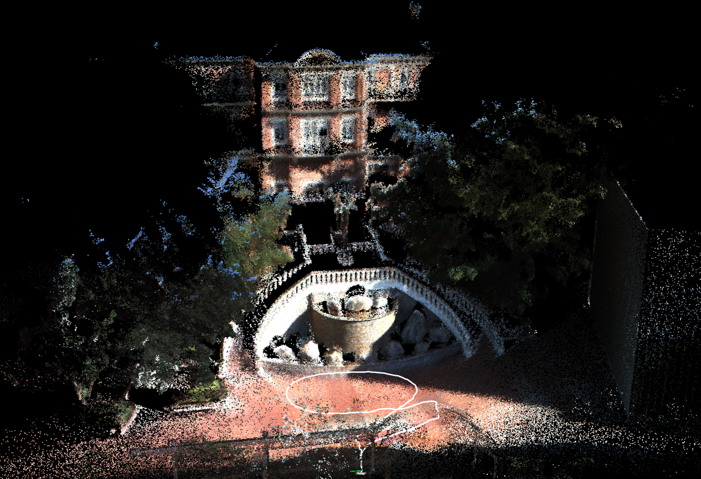
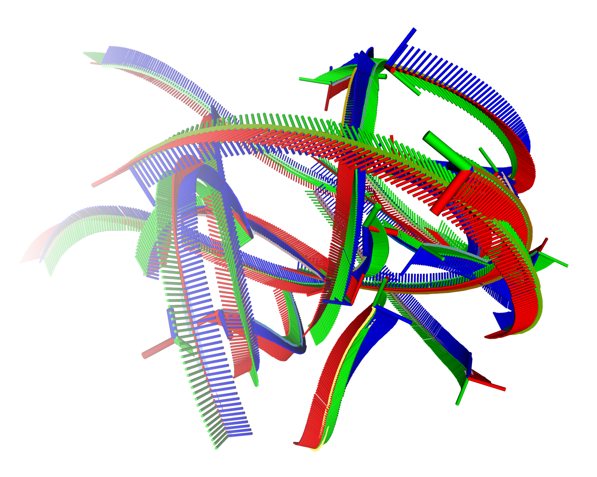
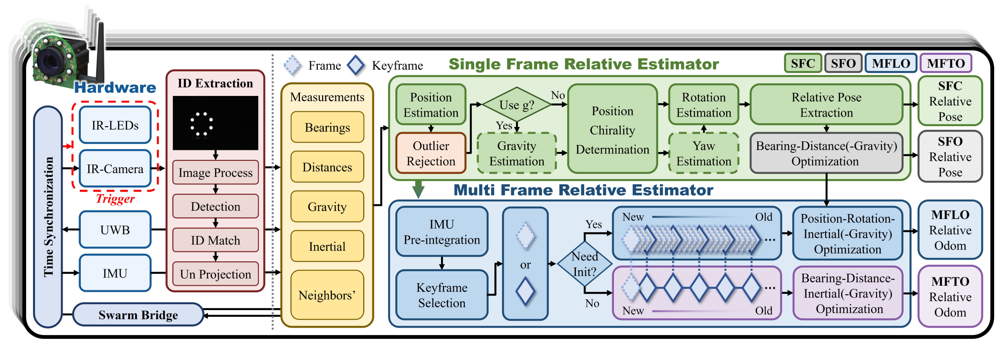
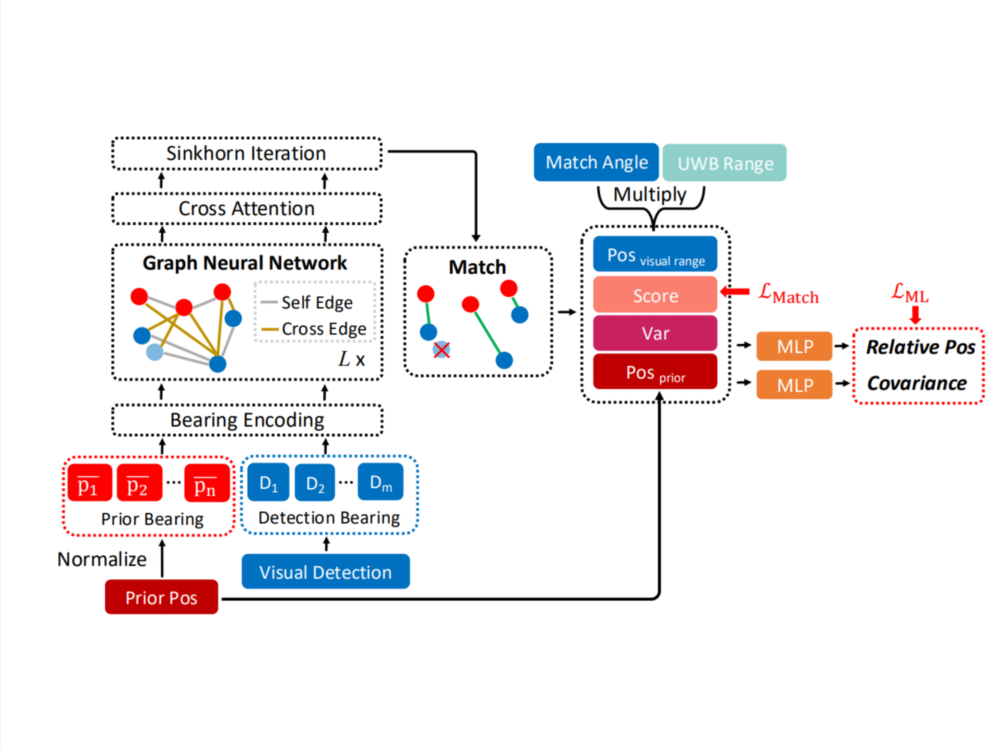
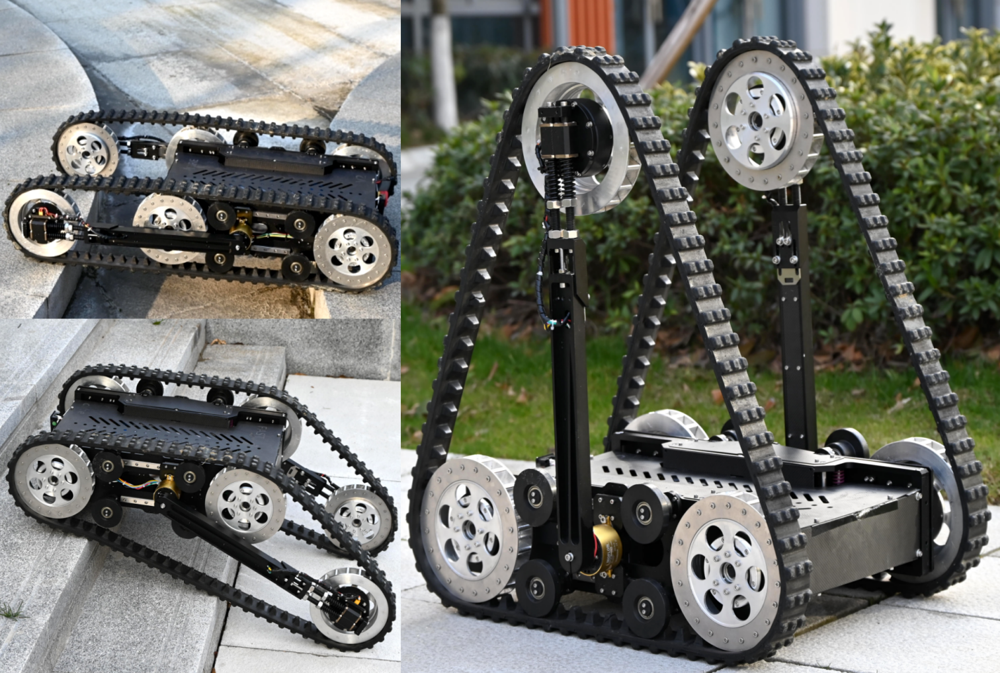
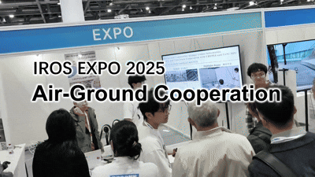

|
|
Hi, I am Jiadong!
I am currently pursuing a master's degree in the FAST Lab (Fire Group)
at the College of Control Science and Engineering, Zhejiang University, under the supervision of
Prof. Yanjun Cao
and Prof. Chao Xu.
Previously, I obtained a bachelor's degree in Automation from Shandong University with the honor of
Excellent Graduation Thesis (top 2%).
My research focuses on robotic perception, including ego-state estimation for individual robots and collaborative perception for multi-robot systems. I am particularly interested in developing accurate and real-time state estimation algorithms that enable robots to perceive themselves, localize their teammates, and operate robustly in complex real-world environments.
My research focuses on robotic perception, including ego-state estimation for individual robots and collaborative perception for multi-robot systems. I am particularly interested in developing accurate and real-time state estimation algorithms that enable robots to perceive themselves, localize their teammates, and operate robustly in complex real-world environments.
🔍 I'm looking for potential PhD positions in Fall 2027. Please contact me if you see a potential fit!
News
[Feb. 2026] Our paper on continuous-time multi-robot direct relative localization is submitted to IEEE TRO.
[Dec. 2025] Our paper on multi-robot direct relative localization is submitted to IEEE TRO.
[Oct. 2025] Our demonstration on air-ground cooperation is accepted by IROS 2025 EXPO.
[Jul. 2025] Our paper on learning-based relative localization is accepted by IROS 2025.
[Jul. 2024] Our paper on reconfigurable tracked robots is accepted by IROS 2024.
Ongoing Works

Selected Publications




Projects

Air-Ground Cooperation without Global Information: RoFly and CubeTrack with CREPES and CoNi-MPC
IROS 2025 EXPO